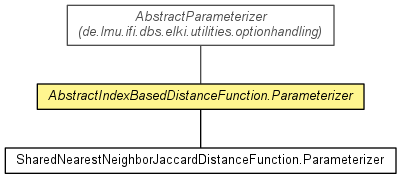

de.lmu.ifi.dbs.elki.distance.distancefunction
Class AbstractIndexBasedDistanceFunction.Parameterizer<F extends IndexFactory<?,?>>
java.lang.Object
 de.lmu.ifi.dbs.elki.utilities.optionhandling.AbstractParameterizer
de.lmu.ifi.dbs.elki.distance.distancefunction.AbstractIndexBasedDistanceFunction.Parameterizer<F>
de.lmu.ifi.dbs.elki.utilities.optionhandling.AbstractParameterizer
de.lmu.ifi.dbs.elki.distance.distancefunction.AbstractIndexBasedDistanceFunction.Parameterizer<F>
- Type Parameters:
F - Factory type
- All Implemented Interfaces:
- Parameterizer
- Direct Known Subclasses:
- AbstractPreferenceVectorBasedCorrelationDistanceFunction.Parameterizer, ERiCDistanceFunction.Parameterizer, LocallyWeightedDistanceFunction.Parameterizer, PCABasedCorrelationDistanceFunction.Parameterizer, SharedNearestNeighborJaccardDistanceFunction.Parameterizer, SubspaceDistanceFunction.Parameterizer
- Enclosing class:
- AbstractIndexBasedDistanceFunction<O,I extends Index,D extends Distance<D>>
public abstract static class AbstractIndexBasedDistanceFunction.Parameterizer<F extends IndexFactory<?,?>>
- extends AbstractParameterizer

Parameterization class.
|
Field Summary |
protected F |
factory
The index factory we use. |
| Methods inherited from class java.lang.Object |
clone, equals, finalize, getClass, hashCode, notify, notifyAll, toString, wait, wait, wait |
factory
protected F extends IndexFactory<?,?> factory
- The index factory we use.
AbstractIndexBasedDistanceFunction.Parameterizer
public AbstractIndexBasedDistanceFunction.Parameterizer()
configIndexFactory
public void configIndexFactory(Parameterization config,
Class<?> restriction,
Class<?> defaultClass)
- Index factory parameter
- Parameters:
config - Parameterizationrestriction - Restriction classdefaultClass - Default value